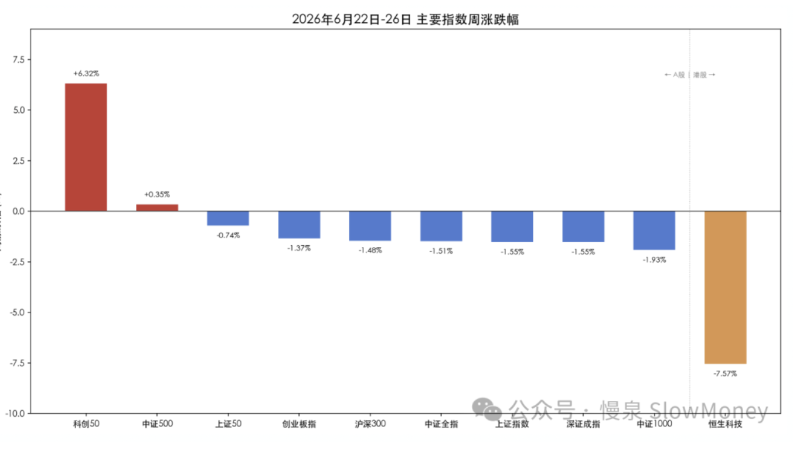
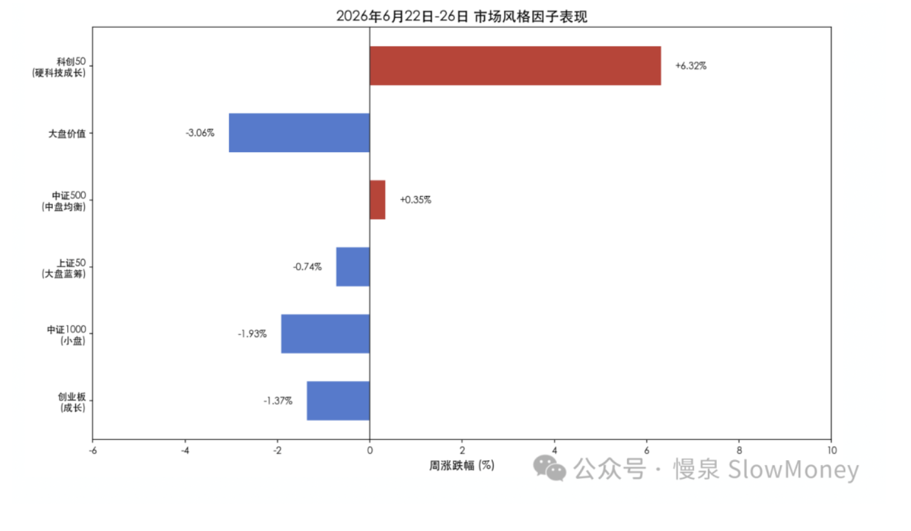

投资备忘20260627-熊？牛？
2026-06-22 — 2026-06-27 · W26 · 周度备忘（补档）
市场在上周判断的情形中选择了先向上、再向下，仍然难以摆脱 4100 点的中枢引力，热门方向上有所分化，最坚硬的仍然是半导体设备、材料方向。市场呈现"朱门酒肉臭、路有冻死骨"的剧烈分化：全部 A 股的跌幅中位数 -3.9%，但是科创 50 指数周涨幅超过 6%，同时恒生科技下跌 7.6%。一时间，你不知道自己身处牛市还是熊市——之前有入市牛、改革牛、水牛、蓝筹牛和深度价值牛，现在请叫他"熊牛"。
本周市场
周一冲高 → 周二周三高位震荡 → 周四科技再爆 → 周五全线溃退。全周呈现"先扬后抑、周五重挫吞噬全周涨幅"的格局：上证周一周四两度冲至 4160+ 区域但均无法站稳，周五的大阴线打破了震荡格局。上证周成交量 3427.80 亿股、周成交额 8.05 万亿；沪深京三市全周日均成交约 3.5 万亿，连续第 10 个交易日突破 3 万亿。全 A 个股周涨跌幅中位数约 -3.9%（按 6/26 全 A 算术平均 -3.88% 估算）。
科创 50 以 +6.32% 领涨所有指数，中证全指 -1.51% 真实反映了全市场整体偏弱。全 A 中位数约 -3.9% 远差于指数表现——指数的"相对温和"掩盖了个股层面的惨烈分化，"指数不跌，个股普跌"是本周最核心的结构特征。
| 指数 | 本周涨跌幅 |
|---|---|
| 科创 50（唯一主线，领涨） | +6.32% |
| 中证 500 | +0.35% |
| 上证 50 | -0.74% |
| 创业板指 | -1.37% |
| 沪深 300 | -1.48% |
| 中证全指（全市场真实写照） | -1.51% |
| 上证指数 | -1.55% |
| 深证成指 | -1.55% |
| 中证 1000 | -1.93% |
| 恒生科技 | -7.57% |

结构上："硬科技成长"（科创 50）是唯一主线，其余风格全面溃退。大盘价值 -3.06% 的表现说明：在 AI 产业爆发 + 宏观疲弱的环境下，传统低估值策略持续失效。小盘股 -1.93% 跌幅最大，反映市场流动性向极少数 AI 硬件龙头集中的"抽血效应"。

市场展望
仓位：经济基本面呈现外需强韧和内需塌陷的"单引擎飞行"格局，5 月经济数据呈现出极端分化的"K 型复苏"：
| 引擎 | 5 月数据 |
|---|---|
| 向上引擎（爆发）：出口 | +19.4% |
| 向上引擎：工业利润 | +18.8% |
| 向上引擎：PPI（从 0.5% 飙升） | +3.9% |
| 向下引擎（崩塌）：社零（转负） | -0.6% |
| 向下引擎：固投 | -4.1% |
| 向下引擎：房地产投资（加速恶化） | -16.2% |
这一矛盾决定了当前市场既非典型牛市也非典型熊市，而是结构性行情 + 整体重心下移。内需的持续恶化意味着：
- 多数上市公司（非 AI 链、非出口链）的业绩将承压——这与全 A 中位数 -3.9% 远差于指数表现完全吻合；
- 市场极度依赖 AI/半导体单主线，主线一旦松动则无接棒者；
- PMI 从 3 月 50.4 → 5 月 50.0 连续下滑，若 6 月跌破 50 将构成"增长确认转弱"信号。
当前市场由流动性与风险偏好驱动（而非基本面驱动），核心支撑来自日均 3.5 万亿的超高成交和 AI 产业业绩爆发。但这种驱动模式极度脆弱——一旦风偏逆转（如周五所见），高杠杆（两融 2.99 万亿）会放大下行速度。
- 新方向：需要关注中报和月底政治局会议影响；
- 风险：海外调整的风险仍然有待定价。
组合备忘
组合本周 Beta 小幅跑输市场（市场指 Wind 全 A 指数），Macro 依靠仓位跑赢市场。组合仓位整体下降：本周继续在 4100 以上降低科技仓位，Beta 仓位最低 57%、周五回到 60% 附近，利用波动结构继续调整，寻找可持续现金流资产；Macro 组合仓位维持在 61%（其中转债 29%），整体保持谨慎。组合的表现主要受到以下因素影响：
- 港股和红利资产继续承压——10% 附近的港股资产虽然占比不高，但港股本周调整较多仍然影响组合表现；
- 红利资产上周整体下跌，虽然在周五调整时开始有表现。
| 类别 | 仓位 |
|---|---|
| Beta 策略（周内最低 57%，周五回到 60% 附近——利用波动调结构） | ≈60% |
| Macro 策略权益仓位（含转债 29%，整体保持谨慎） | 61% |
Beta 小幅跑输市场 · Macro 依靠仓位跑赢市场 · 周度涨幅不再公开播报
操作和思考：上周的主要操作是上冲阶段减仓，特别是科技板块的资产坚决减仓；在周五大幅调整阶段，增加部分红利资产和中报改善主题资产。大盘下跌阶段 Beta 以收集红利资产、中报改善资产和 HALO 资产筹码为主，Macro 以谨慎收集红利和转债为主。
下一步操作：仓位在震荡阶段维持，外围风险释放下跌时增加仓位，但组合控制在 70% 以内。预计指数在当前阶段可能会在 4000–4050 区间震荡，这种情况下仓位维持不变、案头为主；指数大概率会测试 4000 点以下，这种情况下尝试增加仓位。方向上，包括中报改善主题资产、红利资产；港股需要谨慎建仓。
说到熊牛
说到熊牛，借一个图：
截图 · 待补——原图片文件名：633db5c5a7f3a938ead41fc90a8b1720.jpg
入市牛、改革牛、水牛、蓝筹牛、深度价值牛之后，现在请叫他——"熊牛"。
上期钩子的答案：① 4100 颈线的方向选择——市场选择了先向上（两度冲至 4160+）再向下（周五大阴线吞噬全周涨幅），仍难摆脱 4100 中枢引力，震荡格局被打破；② 红利"黄金坑"验证——仍在坑中：红利资产上周整体下跌，但周五调整时开始有表现，坑沿初现、尚未确认；③ FOMC 加息定价的冲击——兑现：利率敏感的大盘价值 -3.06%、银行/煤炭全周领跌，资金加速涌向 AI 硬科技。新钩子：① 4000–4050 区间 vs 测试 4000 以下的加仓计划（70% 以内）能否兑现；② 中报改善主题 + 月底政治局会议的催化成色；③ PMI 6 月是否跌破 50（"增长确认转弱"信号）；④ 港股谨慎建仓的时机。对账窗口：2026 年 7 月中旬。